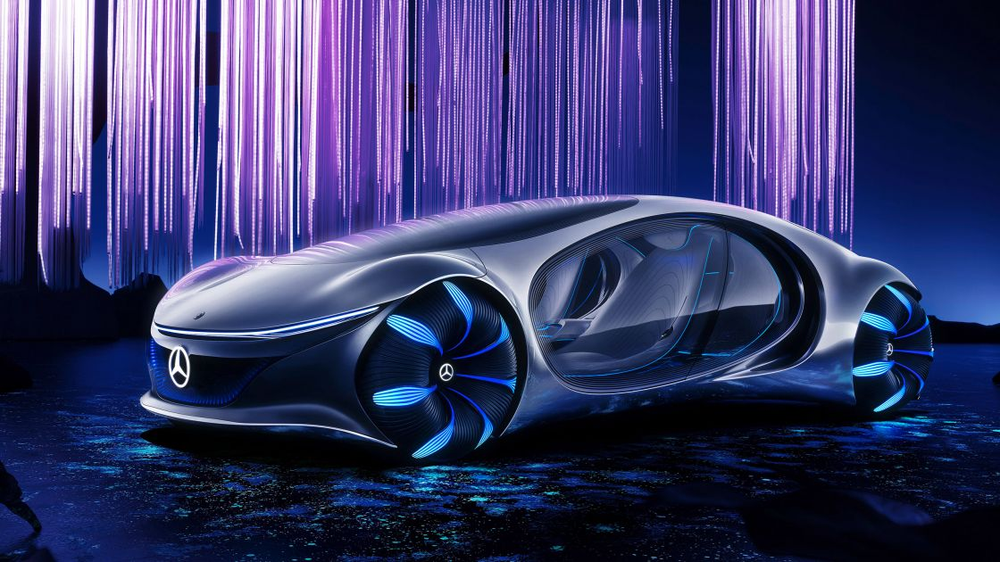

Modelăm viitorul mobilității.
Ne concentrăm pe cele patru mari tendințe de mobilitate ale viitorului.
Ne concentrăm pe cele patru mari tendințe de mobilitate ale viitorului.
Ca pionieri ai industriei automobilelor tindem spre inovații pentru o mobilitate care să protejeze resursele. Descoperiți ideile și soluțiile noastre pentru condusul complet autonom, concepte flexibile de mobilitate, mobilitate electrică și conectare digitală în rețea.
Stiri
Mercedes-Benz impulsioneaza tranzitia sustenabila in sporturile cu motor.
Noi transferăm sustenabilitate în sporturile cu motor și forțăm pași ambițioși în direcția emisiilor neutre de carbon.
Istorie
Mercedes-Benz, denumită în mod obișnuit Mercedes și uneori Benz, este o marcă germană de autovehicule de lux și comerciale înființată în 1926. Din noiembrie 2019, vehiculele comerciale grele (camioane și autobuze) cu emblema Mercedes-Benz sunt administrate de Daimler Truck, o fostă parte a grupului Mercedes-Benz transformată într-o companie independentă la sfârșitul anului 2021. În 2018, Mercedes-Benz a fost cea mai mare marcă de vehicule premium din lume, având vândute 2,31 milioane de mașini de pasageri. Originile mărcii se află în Mercedes-ul 1901 de la Daimler-Motoren-Gesellschaft și Benz Patent-Motorwagen 1886 de la Karl Benz, care este considerat primul motor cu ardere internă dintr-un automobil autopropulsat. Sloganul mărcii este „cel mai bun sau nimic”. Citește mai mult...